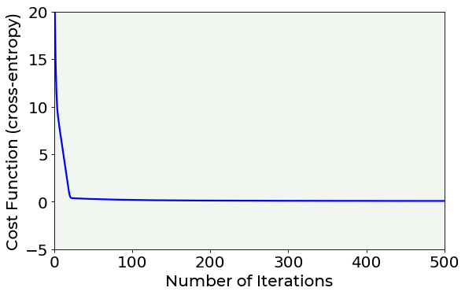

<!DOCTYPE html>

<html xmlns="http://www.w3.org/1999/xhtml">
  <head>
    <meta charset="utf-8" />
    <title>Logistic Regression with One Neuron &#8212; Applied Deep Learning 2nd Edition - Online Companion</title>
    <link rel="stylesheet" href="https://cdnjs.cloudflare.com/ajax/libs/font-awesome/5.11.2/css/all.min.css" integrity="sha384-KA6wR/X5RY4zFAHpv/CnoG2UW1uogYfdnP67Uv7eULvTveboZJg0qUpmJZb5VqzN" crossorigin="anonymous">
    <link href="../_static/css/index.css" rel="stylesheet">
    <link rel="stylesheet" href="../_static/sphinx-book-theme.css" type="text/css" />
    <link rel="stylesheet" href="../_static/pygments.css" type="text/css" />
    <link rel="stylesheet" type="text/css" href="../_static/togglebutton.css" />
    <link rel="stylesheet" type="text/css" href="../_static/copybutton.css" />
    <link rel="stylesheet" type="text/css" href="../_static/mystnb.css" />
    <link rel="stylesheet" type="text/css" href="../_static/sphinx-thebe.css" />
    <link rel="stylesheet" type="text/css" href="../_static/jupyter-sphinx.css" />
    <script id="documentation_options" data-url_root="../" src="../_static/documentation_options.js"></script>
    <script src="../_static/sphinx-book-theme.js"></script>
    <script src="../_static/jquery.js"></script>
    <script src="../_static/underscore.js"></script>
    <script src="../_static/doctools.js"></script>
    <script src="../_static/language_data.js"></script>
    <script src="../_static/togglebutton.js"></script>
    <script src="../_static/clipboard.min.js"></script>
    <script src="../_static/copybutton.js"></script>
    <script src="../_static/mystnb.js"></script>
    <script src="../_static/sphinx-book-theme.js"></script>
    <script >var togglebuttonSelector = '.toggle, .admonition.dropdown, .tag_hide_input div.cell_input, .tag_hide-input div.cell_input, .tag_hide_output div.cell_output, .tag_hide-output div.cell_output, .tag_hide_cell.cell, .tag_hide-cell.cell';</script>
    <script src="https://cdnjs.cloudflare.com/ajax/libs/require.js/2.3.4/require.min.js"></script>
    <script src="https://unpkg.com/@jupyter-widgets/html-manager@^0.18.0/dist/embed-amd.js"></script>
    <script async="async" src="https://cdnjs.cloudflare.com/ajax/libs/mathjax/2.7.5/latest.js?config=TeX-AMS-MML_HTMLorMML"></script>
    <script async="async" src="https://unpkg.com/thebelab@latest/lib/index.js"></script>
    <script >
        const thebe_selector = ".thebe"
        const thebe_selector_input = "pre"
        const thebe_selector_output = ".output"
    </script>
    <script async="async" src="../_static/sphinx-thebe.js"></script>
    <link rel="index" title="Index" href="../genindex.html" />
    <link rel="search" title="Search" href="../search.html" />
    <link rel="prev" title="Linear Regression with NumPy" href="Linear_regression_with_numpy.html" />

    <meta name="viewport" content="width=device-width, initial-scale=1">
    <meta name="docsearch:language" content="en">


  </head>
  <body data-spy="scroll" data-target="#bd-toc-nav" data-offset="80">
    

    <div class="container-xl">
      <div class="row">
          
<div class="col-12 col-md-3 bd-sidebar site-navigation show" id="site-navigation">
    
        <div class="navbar-brand-box">
<a class="navbar-brand text-wrap" href="../index.html">
  
  
  
  
  <h1 class="site-logo" id="site-title">Applied Deep Learning 2nd Edition - Online Companion</h1>
  
</a>
</div>

<form class="bd-search d-flex align-items-center" action="../search.html" method="get">
  <i class="icon fas fa-search"></i>
  <input type="search" class="form-control" name="q" id="search-input" placeholder="Search this book..." aria-label="Search this book..." autocomplete="off" >
</form>

<nav class="bd-links" id="bd-docs-nav" aria-label="Main navigation">
  <p class="caption">
 <span class="caption-text">
  Get started
 </span>
</p>
<ul class="nav sidenav_l1">
 <li class="toctree-l1">
  <a class="reference internal" href="../start/introduction.html">
   Introduction
  </a>
 </li>
 <li class="toctree-l1">
  <a class="reference internal" href="../start/faq.html">
   Frequently Asked Questions
  </a>
 </li>
</ul>
<p class="caption">
 <span class="caption-text">
  Chapter 14 - Single Neuron
 </span>
</p>
<ul class="current nav sidenav_l1">
 <li class="toctree-l1">
  <a class="reference internal" href="Introduction.html">
   Introduction
  </a>
 </li>
 <li class="toctree-l1">
  <a class="reference internal" href="Linear_regression_with_one_neuron.html">
   Linear Regression with One Neuron
  </a>
 </li>
 <li class="toctree-l1">
  <a class="reference internal" href="Linear_regression_with_numpy.html">
   Linear Regression with NumPy
  </a>
 </li>
 <li class="toctree-l1 current active">
  <a class="current reference internal" href="#">
   Logistic Regression with One Neuron
  </a>
 </li>
</ul>

</nav>

 <!-- To handle the deprecated key -->

</div>


          


          
<main class="col py-md-3 pl-md-4 bd-content overflow-auto" role="main">
    
    <div class="row topbar fixed-top container-xl">
    <div class="col-12 col-md-3 bd-topbar-whitespace site-navigation show">
    </div>
    <div class="col pl-2 topbar-main">
        
        <button id="navbar-toggler" class="navbar-toggler ml-0" type="button" data-toggle="collapse"
            data-toggle="tooltip" data-placement="bottom" data-target=".site-navigation" aria-controls="navbar-menu"
            aria-expanded="true" aria-label="Toggle navigation" aria-controls="site-navigation"
            title="Toggle navigation" data-toggle="tooltip" data-placement="left">
            <i class="fas fa-bars"></i>
            <i class="fas fa-arrow-left"></i>
            <i class="fas fa-arrow-up"></i>
        </button>
        
        <div class="dropdown-buttons-trigger">
    <button id="dropdown-buttons-trigger" class="btn btn-secondary topbarbtn" aria-label="Download this page"><i
            class="fas fa-download"></i></button>

    
    <div class="dropdown-buttons">
        <!-- ipynb file if we had a myst markdown file -->
        
        <!-- Download raw file -->
        <a class="dropdown-buttons" href="../_sources/Chapter14/Logistic_regression_with_one_neuron.ipynb"><button type="button"
                class="btn btn-secondary topbarbtn" title="Download source file" data-toggle="tooltip"
                data-placement="left">.ipynb</button></a>
        <!-- Download PDF via print -->
        <button type="button" id="download-print" class="btn btn-secondary topbarbtn" title="Print to PDF"
            onClick="window.print()" data-toggle="tooltip" data-placement="left">.pdf</button>
    </div>
    
</div>
        <!-- Source interaction buttons -->


        <!-- Full screen (wrap in <a> to have style consistency -->
        <a class="full-screen-button"><button type="button" class="btn btn-secondary topbarbtn" data-toggle="tooltip"
                data-placement="bottom" onclick="toggleFullScreen()" title="Fullscreen mode"><i
                    class="fas fa-expand"></i></button></a>

        <!-- Launch buttons -->

<div class="dropdown-buttons-trigger">
    <button id="dropdown-buttons-trigger" class="btn btn-secondary topbarbtn"
        aria-label="Launch interactive content"><i class="fas fa-rocket"></i></button>
    <div class="dropdown-buttons">
        
        
        
        <a class="colab-button" href="https://colab.research.google.com/github/michelucci/TensorFlow-Roadshow-Zurich/blob/master/path/to/book/Chapter14/Logistic_regression_with_one_neuron.ipynb"><button type="button" class="btn btn-secondary topbarbtn"
                title="Launch Colab" data-toggle="tooltip" data-placement="left">Colab</button></a>
        
        
    </div>
</div>

    </div>

    <!-- Table of contents -->
    <div class="d-none d-md-block col-md-2 bd-toc show">
        <div class="tocsection onthispage pt-5 pb-3">
            <i class="fas fa-list"></i> Contents
        </div>
        <nav id="bd-toc-nav">
            <ul class="nav section-nav flex-column">
 <li class="toc-h2 nav-item toc-entry">
  <a class="reference internal nav-link" href="#real-case-example-blood-cells-detection">
   Real Case Example:
   <strong>
    Blood Cells Detection
   </strong>
  </a>
  <ul class="nav section-nav flex-column">
   <li class="toc-h3 nav-item toc-entry">
    <a class="reference internal nav-link" href="#dataset-overview">
     Dataset Overview
    </a>
   </li>
   <li class="toc-h3 nav-item toc-entry">
    <a class="reference internal nav-link" href="#libraries-and-dataset-import">
     Libraries and Dataset Import
    </a>
   </li>
   <li class="toc-h3 nav-item toc-entry">
    <a class="reference internal nav-link" href="#dataset-splitting">
     Dataset Splitting
    </a>
   </li>
   <li class="toc-h3 nav-item toc-entry">
    <a class="reference internal nav-link" href="#logistic-regression-the-model">
     Logistic Regression: the Model
    </a>
   </li>
   <li class="toc-h3 nav-item toc-entry">
    <a class="reference internal nav-link" href="#structure-of-the-net">
     Structure of the Net
    </a>
   </li>
   <li class="toc-h3 nav-item toc-entry">
    <a class="reference internal nav-link" href="#training-phase-model-s-learning-phase">
     Training Phase (Model’s Learning Phase)
    </a>
   </li>
   <li class="toc-h3 nav-item toc-entry">
    <a class="reference internal nav-link" href="#testing-phase-model-s-performances-evaluation">
     Testing Phase (Model’s Performances Evaluation)
    </a>
   </li>
  </ul>
 </li>
 <li class="toc-h2 nav-item toc-entry">
  <a class="reference internal nav-link" href="#exercises">
   Exercises
  </a>
 </li>
 <li class="toc-h2 nav-item toc-entry">
  <a class="reference internal nav-link" href="#references">
   References
  </a>
 </li>
 <li class="toc-h2 nav-item toc-entry">
  <a class="reference internal nav-link" href="#further-readings-a-name-fr-a">
   Further Readings
   <a name="fr">
   </a>
  </a>
 </li>
</ul>

        </nav>
    </div>
</div>
    <div id="main-content" class="row">
        <div class="col-12 col-md-9 pl-md-3 pr-md-0">
        
              <div>
                
  <div class="section" id="logistic-regression-with-one-neuron">
<h1>Logistic Regression with One Neuron<a class="headerlink" href="#logistic-regression-with-one-neuron" title="Permalink to this headline">¶</a></h1>
<p>(C) 2020 - Umberto Michelucci, Michela Sperti</p>
<p>This notebook is part of the book <em>Applied Deep Learning: a case based approach, <strong>2nd edition</strong></em> from APRESS by <a class="reference external" href="mailto:umberto&#46;michelucci&#37;&#52;&#48;toelt&#46;ai">U<span>&#46;</span> Michelucci</a> and <a class="reference external" href="mailto:michela&#46;sperti&#37;&#52;&#48;toelt&#46;ai">M<span>&#46;</span> Sperti</a>.</p>
<p>The purpose of this notebook is to give an example of an application of Logistic Regression performed with One Neuron to a dataset taken from real world.</p>
<p><strong>Notebook Learning Goals</strong></p>
<p>At the end of the notebook you are going to have a clear idea of what logistic regression is, seen through a practical example. It is very instructive to compare this notebook with <em>Linear_Regression_with_one_neuron.ipynb</em> one, since they both are applications of the One Neuron model, used to solve different problems. Along this notebook you will be provided with information about this model to notice similarities and differences with the Linear Regression one. You are going to see how simple is using Keras and how, changing a few parameters, you can easily obtain a different model that can solve a different problem.</p>
<div class="section" id="real-case-example-blood-cells-detection">
<h2>Real Case Example: <strong>Blood Cells Detection</strong><a class="headerlink" href="#real-case-example-blood-cells-detection" title="Permalink to this headline">¶</a></h2>
<div class="section" id="dataset-overview">
<h3>Dataset Overview<a class="headerlink" href="#dataset-overview" title="Permalink to this headline">¶</a></h3>
<p>In this notebook we will use the BCCD Dataset, a small-scale dataset for blood cells detection. The dataset will be downloaded from its GitHub repository.</p>
<p>From this dataset, nicolaschen1 developed two Python scripts to make preparation data for recognition of abnormalities in blood cells on medical images. In the notebook, a slightly modified version of the two scripts will be used.</p>
<ol class="simple">
<li><p>a script to create the pandas dataframe with all data needed: <em>filename</em>, <em>cell_type</em>, <em>xmin</em>, <em>xmax</em>, <em>ymin</em>, <em>ymax</em>,</p></li>
<li><p>a script to plot the boxes for each image and save it in a new directory.</p></li>
</ol>
<p>The Image Type is jpeg(JPEG) with Width x Height: 640 x 480.</p>
<p>The dataset contains three kind of labels::</p>
<ol class="simple">
<li><p><em>RBC</em> (Red Blood Cell)</p></li>
<li><p><em>WBC</em> (White Blood Cell)</p></li>
<li><p><em>Platelets</em></p></li>
</ol>
<p>To keep it simple, we will consider only RBC and WBC to be predicted. In detail, we will face a typical classification problem. The model which will be built is made of one neuron and will predict if an image contains RBC or WBC from <code class="docutils literal notranslate"><span class="pre">xmin</span></code>, <code class="docutils literal notranslate"><span class="pre">xmax</span></code>, <code class="docutils literal notranslate"><span class="pre">ymin</span></code> and <code class="docutils literal notranslate"><span class="pre">ymax</span></code> variables.</p>
</div>
<div class="section" id="libraries-and-dataset-import">
<h3>Libraries and Dataset Import<a class="headerlink" href="#libraries-and-dataset-import" title="Permalink to this headline">¶</a></h3>
<p>This section contains the necessary libraries (such as tensorflow or pandas) you need to import to run the notebook.</p>
<div class="cell docutils container">
<div class="cell_input docutils container">
<div class="highlight-default notranslate"><div class="highlight"><pre><span></span># This command install code from the tensorflow docs repository.
# We need to use tensorflow_docs.modeling function when training our model.
# This function will generate a report on the network&#39;s perfomances
# step by step during the training phase (see Training Phase section of the
# notebook). 

# You can safely ignore this cell if you don&#39;t understand what it does.

!pip install git+https://github.com/tensorflow/docs
</pre></div>
</div>
</div>
<div class="cell_output docutils container">
<div class="output stream highlight-none notranslate"><div class="highlight"><pre><span></span>Collecting git+https://github.com/tensorflow/docs
  Cloning https://github.com/tensorflow/docs to /tmp/pip-req-build-yf9sq2hw
  Running command git clone -q https://github.com/tensorflow/docs /tmp/pip-req-build-yf9sq2hw
Requirement already satisfied (use --upgrade to upgrade): tensorflow-docs===0.0.0146903589e869081cce7006f160331ea5837418c- from git+https://github.com/tensorflow/docs in /usr/local/lib/python3.6/dist-packages
Requirement already satisfied: astor in /usr/local/lib/python3.6/dist-packages (from tensorflow-docs===0.0.0146903589e869081cce7006f160331ea5837418c-) (0.8.1)
Requirement already satisfied: absl-py in /usr/local/lib/python3.6/dist-packages (from tensorflow-docs===0.0.0146903589e869081cce7006f160331ea5837418c-) (0.10.0)
Requirement already satisfied: protobuf in /usr/local/lib/python3.6/dist-packages (from tensorflow-docs===0.0.0146903589e869081cce7006f160331ea5837418c-) (3.12.4)
Requirement already satisfied: pyyaml in /usr/local/lib/python3.6/dist-packages (from tensorflow-docs===0.0.0146903589e869081cce7006f160331ea5837418c-) (3.13)
Requirement already satisfied: six in /usr/local/lib/python3.6/dist-packages (from absl-py-&gt;tensorflow-docs===0.0.0146903589e869081cce7006f160331ea5837418c-) (1.15.0)
Requirement already satisfied: setuptools in /usr/local/lib/python3.6/dist-packages (from protobuf-&gt;tensorflow-docs===0.0.0146903589e869081cce7006f160331ea5837418c-) (50.3.0)
Building wheels for collected packages: tensorflow-docs
  Building wheel for tensorflow-docs (setup.py) ... [?25l[?25hdone
  Created wheel for tensorflow-docs: filename=tensorflow_docs-0.0.0146903589e869081cce7006f160331ea5837418c_-cp36-none-any.whl size=143892 sha256=67956e182f5f16d1ce2b58b731b3a6805a2b48796e99028f60b8874bcb7c3cfc
  Stored in directory: /tmp/pip-ephem-wheel-cache-_8egr7zh/wheels/eb/1b/35/fce87697be00d2fc63e0b4b395b0d9c7e391a10e98d9a0d97f
Successfully built tensorflow-docs
</pre></div>
</div>
</div>
</div>
<div class="cell docutils container">
<div class="cell_input docutils container">
<div class="highlight-default notranslate"><div class="highlight"><pre><span></span><span class="c1"># general libraries</span>
<span class="kn">import</span> <span class="nn">numpy</span> <span class="k">as</span> <span class="nn">np</span>
<span class="kn">import</span> <span class="nn">pandas</span> <span class="k">as</span> <span class="nn">pd</span>
<span class="kn">import</span> <span class="nn">matplotlib.pyplot</span> <span class="k">as</span> <span class="nn">plt</span>
<span class="kn">import</span> <span class="nn">matplotlib.font_manager</span> <span class="k">as</span> <span class="nn">fm</span>

<span class="c1"># tensorflow libraries</span>
<span class="kn">import</span> <span class="nn">tensorflow</span> <span class="k">as</span> <span class="nn">tf</span>
<span class="kn">from</span> <span class="nn">tensorflow</span> <span class="kn">import</span> <span class="n">keras</span>
<span class="kn">from</span> <span class="nn">tensorflow.keras</span> <span class="kn">import</span> <span class="n">layers</span>
<span class="kn">import</span> <span class="nn">tensorflow_docs</span> <span class="k">as</span> <span class="nn">tfdocs</span>
<span class="kn">import</span> <span class="nn">tensorflow_docs.modeling</span>

<span class="c1"># ignore warnings</span>
<span class="kn">import</span> <span class="nn">warnings</span>
<span class="n">warnings</span><span class="o">.</span><span class="n">simplefilter</span><span class="p">(</span><span class="s1">&#39;ignore&#39;</span><span class="p">)</span>
</pre></div>
</div>
</div>
</div>
<p>The following cells are needed to <strong>download</strong> the dataset. You don’t need to understand all the download and processing steps, since the focus of this section is to apply a logistic regression model to a real case dataset (therefore you can just execute the following cells, ignoring their content). If you are interested in the details, you can find the complete code in the /modules folder.</p>
<p>Now we clone the repository for the book, to be able to access the modules that we have written for all the juypter notebooks, and the repository which contains the dataset.</p>
<div class="cell docutils container">
<div class="cell_input docutils container">
<div class="highlight-default notranslate"><div class="highlight"><pre><span></span><span class="c1"># Referring to the following cell, if you want to re-clone a repository</span>
<span class="c1"># inside the google colab instance, you need to delete it first. </span>
<span class="c1"># You can delete the repositories contained in this instance executing </span>
<span class="c1"># the following two lines of code (deleting the # comment symbol).</span>

<span class="c1"># !rm -rf ADL-Book-2nd-Ed </span>
<span class="c1"># !rm -rf BCCD_Dataset</span>
</pre></div>
</div>
</div>
</div>
<div class="cell docutils container">
<div class="cell_input docutils container">
<div class="highlight-default notranslate"><div class="highlight"><pre><span></span># This command actually clone the repository of the book in the google colab
# instance. In this way this notebook will have access to the modules
# we have written for this book.

# Please note that in case you have already run this cell, and you run it again
# you may get the error message:
#
# fatal: destination path &#39;ADL-Book-2nd-Ed&#39; already exists and is not an empty directory.
# 
# In this case you can safely ignore the error message.
!git clone https://github.com/toelt-llc/ADL-Book-2nd-Ed.git
</pre></div>
</div>
</div>
<div class="cell_output docutils container">
<div class="output stream highlight-none notranslate"><div class="highlight"><pre><span></span>Cloning into &#39;ADL-Book-2nd-Ed&#39;...
remote: Enumerating objects: 161, done.
remote: Counting objects: 100% (161/161), done.
remote: Compressing objects: 100% (112/112), done.
remote: Total 161 (delta 86), reused 120 (delta 48), pack-reused 0
Receiving objects: 100% (161/161), 11.04 MiB | 33.56 MiB/s, done.
Resolving deltas: 100% (86/86), done.
</pre></div>
</div>
</div>
</div>
<div class="cell docutils container">
<div class="cell_input docutils container">
<div class="highlight-default notranslate"><div class="highlight"><pre><span></span># We also clone the repository containing the dataset. 

!git clone https://github.com/Shenggan/BCCD_Dataset.git
</pre></div>
</div>
</div>
<div class="cell_output docutils container">
<div class="output stream highlight-none notranslate"><div class="highlight"><pre><span></span>Cloning into &#39;BCCD_Dataset&#39;...
remote: Enumerating objects: 800, done.
remote: Total 800 (delta 0), reused 0 (delta 0), pack-reused 800
Receiving objects: 100% (800/800), 7.39 MiB | 30.87 MiB/s, done.
Resolving deltas: 100% (378/378), done.
</pre></div>
</div>
</div>
</div>
<div class="cell docutils container">
<div class="cell_input docutils container">
<div class="highlight-default notranslate"><div class="highlight"><pre><span></span><span class="c1"># This cell imports some custom written functions that we have created to </span>
<span class="c1"># make the loading of the data and the plotting easier. You don&#39;t need </span>
<span class="c1"># to undertsand the details and you can simply ignore this cell.</span>
<span class="c1"># Simply run it with CMD+Enter (on Mac) or CTRL+Enter (Windows or Ubuntu) to</span>
<span class="c1"># import the necessary functions.</span>

<span class="kn">import</span> <span class="nn">sys</span>
<span class="n">sys</span><span class="o">.</span><span class="n">path</span><span class="o">.</span><span class="n">append</span><span class="p">(</span><span class="s1">&#39;ADL-Book-2nd-Ed/modules/&#39;</span><span class="p">)</span>

<span class="kn">from</span> <span class="nn">read_bccd_dataset</span> <span class="kn">import</span> <span class="n">read_data</span>
<span class="kn">from</span> <span class="nn">style_setting</span> <span class="kn">import</span> <span class="n">set_style</span>
</pre></div>
</div>
</div>
</div>
<div class="cell docutils container">
<div class="cell_input docutils container">
<div class="highlight-default notranslate"><div class="highlight"><pre><span></span><span class="c1"># This cell provides the dataset on which you will implement the logistic regression model.</span>

<span class="c1"># After cell&#39;s execution, you will have a pandas dataframe containing filenames,</span>
<span class="c1"># features (xmin, xmax, ymin, ymax), and labels (cell_type).</span>

<span class="c1"># You don&#39;t need to understand the implementation&#39;s details and you can simply ignore this cell.</span>
<span class="c1"># Simply run it with CMD+Enter (on Mac) or CTRL+Enter (Windows or Ubuntu) to</span>
<span class="c1"># import the necessary functions.</span>

<span class="n">rd</span> <span class="o">=</span> <span class="n">read_data</span><span class="p">()</span>
<span class="n">dataset</span> <span class="o">=</span> <span class="n">rd</span><span class="o">.</span><span class="n">preprocess_bccd_dataset</span><span class="p">()</span>
<span class="n">dataset_reduced</span> <span class="o">=</span> <span class="n">dataset</span><span class="o">.</span><span class="n">loc</span><span class="p">[(</span><span class="n">dataset</span><span class="p">[</span><span class="s1">&#39;cell_type&#39;</span><span class="p">]</span> <span class="o">==</span> <span class="s1">&#39;RBC&#39;</span><span class="p">)</span> <span class="o">|</span> <span class="p">(</span><span class="n">dataset</span><span class="p">[</span><span class="s1">&#39;cell_type&#39;</span><span class="p">]</span> <span class="o">==</span> <span class="s1">&#39;WBC&#39;</span><span class="p">)]</span>
<span class="n">bccd_features</span> <span class="o">=</span> <span class="n">dataset_reduced</span><span class="p">[[</span><span class="s1">&#39;xmin&#39;</span><span class="p">,</span> <span class="s1">&#39;xmax&#39;</span><span class="p">,</span> <span class="s1">&#39;ymin&#39;</span><span class="p">,</span> <span class="s1">&#39;ymax&#39;</span><span class="p">]]</span>
<span class="n">bccd_labels</span> <span class="o">=</span> <span class="n">dataset_reduced</span><span class="p">[</span><span class="s1">&#39;cell_type&#39;</span><span class="p">]</span>
</pre></div>
</div>
</div>
</div>
<p>Now you have all the necessary elements to successfully implement this tutorial. <strong>Let’s have a look at our data</strong>:</p>
<div class="cell docutils container">
<div class="cell_input docutils container">
<div class="highlight-default notranslate"><div class="highlight"><pre><span></span><span class="n">num_observations</span> <span class="o">=</span> <span class="nb">len</span><span class="p">(</span><span class="n">bccd_features</span><span class="p">)</span>
<span class="nb">print</span><span class="p">(</span><span class="s1">&#39;Number of total samples: &#39;</span><span class="p">,</span> <span class="n">num_observations</span><span class="p">)</span>
</pre></div>
</div>
</div>
<div class="cell_output docutils container">
<div class="output stream highlight-none notranslate"><div class="highlight"><pre><span></span>Number of total samples:  4527
</pre></div>
</div>
</div>
</div>
<div class="cell docutils container">
<div class="cell_input docutils container">
<div class="highlight-default notranslate"><div class="highlight"><pre><span></span><span class="n">bccd_features</span><span class="o">.</span><span class="n">head</span><span class="p">()</span>
</pre></div>
</div>
</div>
<div class="cell_output docutils container">
<div class="output text_html"><div>
<style scoped>
    .dataframe tbody tr th:only-of-type {
        vertical-align: middle;
    }

    .dataframe tbody tr th {
        vertical-align: top;
    }

    .dataframe thead th {
        text-align: right;
    }
</style>
<table border="1" class="dataframe">
  <thead>
    <tr style="text-align: right;">
      <th></th>
      <th>xmin</th>
      <th>xmax</th>
      <th>ymin</th>
      <th>ymax</th>
    </tr>
  </thead>
  <tbody>
    <tr>
      <th>0</th>
      <td>192</td>
      <td>292</td>
      <td>376</td>
      <td>473</td>
    </tr>
    <tr>
      <th>1</th>
      <td>301</td>
      <td>419</td>
      <td>320</td>
      <td>424</td>
    </tr>
    <tr>
      <th>2</th>
      <td>433</td>
      <td>510</td>
      <td>273</td>
      <td>358</td>
    </tr>
    <tr>
      <th>3</th>
      <td>434</td>
      <td>528</td>
      <td>368</td>
      <td>454</td>
    </tr>
    <tr>
      <th>4</th>
      <td>507</td>
      <td>574</td>
      <td>381</td>
      <td>454</td>
    </tr>
  </tbody>
</table>
</div></div></div>
</div>
<p>The dataset is made of <strong>4527 observations</strong>, <strong>1 target</strong> column (<code class="docutils literal notranslate"><span class="pre">cell_type</span></code>) and <strong>4 features</strong> (<code class="docutils literal notranslate"><span class="pre">xmin</span></code>, <code class="docutils literal notranslate"><span class="pre">xmax</span></code>, <code class="docutils literal notranslate"><span class="pre">ymin</span></code>, <code class="docutils literal notranslate"><span class="pre">ymax</span></code>).</p>
<p>When working with images, it is useful to get an idea of how they look. Let’s plot an example image from our dataset.</p>
<div class="cell docutils container">
<div class="cell_input docutils container">
<div class="highlight-default notranslate"><div class="highlight"><pre><span></span><span class="c1"># The following line contains the path to fonts that are used to plot result in</span>
<span class="c1"># a uniform way.</span>

<span class="n">f</span> <span class="o">=</span> <span class="n">set_style</span><span class="p">()</span><span class="o">.</span><span class="n">set_general_style_parameters</span><span class="p">()</span>
</pre></div>
</div>
</div>
</div>
<div class="cell docutils container">
<div class="cell_input docutils container">
<div class="highlight-default notranslate"><div class="highlight"><pre><span></span><span class="c1"># Image Example</span>

<span class="n">fig</span> <span class="o">=</span> <span class="n">plt</span><span class="o">.</span><span class="n">figure</span><span class="p">()</span>
<span class="n">ax</span> <span class="o">=</span> <span class="n">fig</span><span class="o">.</span><span class="n">add_subplot</span><span class="p">(</span><span class="mi">111</span><span class="p">)</span>
<span class="c1"># add axes to the image</span>
<span class="n">plt</span><span class="o">.</span><span class="n">axis</span><span class="p">(</span><span class="s1">&#39;off&#39;</span><span class="p">)</span>
<span class="c1"># read and plot the image</span>
<span class="n">image</span> <span class="o">=</span> <span class="n">plt</span><span class="o">.</span><span class="n">imread</span><span class="p">(</span><span class="s1">&#39;BCCD_Dataset/BCCD/JPEGImages/BloodImage_00000.jpg&#39;</span><span class="p">)</span>
<span class="n">plt</span><span class="o">.</span><span class="n">imshow</span><span class="p">(</span><span class="n">image</span><span class="p">)</span>
</pre></div>
</div>
</div>
<div class="cell_output docutils container">
<div class="output text_plain highlight-none notranslate"><div class="highlight"><pre><span></span>&lt;matplotlib.image.AxesImage at 0x7f35604d5908&gt;
</pre></div>
</div>

</div>
</div>
<p>Notice that our features are a simplified version of all the image, in fact for each image we only have 4 values (<code class="docutils literal notranslate"><span class="pre">xmin</span></code>,<code class="docutils literal notranslate"><span class="pre">xmax</span></code>,<code class="docutils literal notranslate"><span class="pre">ymin</span></code> and <code class="docutils literal notranslate"><span class="pre">ymax</span></code>).</p>
</div>
<div class="section" id="dataset-splitting">
<h3>Dataset Splitting<a class="headerlink" href="#dataset-splitting" title="Permalink to this headline">¶</a></h3>
<p><em>In any machine learning project, it is a good behaviour to split the dataset you have at your disposal in different subsets</em>. Plenty of theoretical explanations about this need is present in literature. In the <a class="reference external" href="#fr">Further Readings</a> section of the notebook you will find some advice on useful material about this topic. To simply explain the concept: when you build a machine learning model, you first need to train (i.e. build) the model and then you have to test it (i.e. verify the model’s performances on never seen before data). The roughest way to do this is to split the dataset into two subsets: 80% of the original dataset to train the model (the more data you have the better your model will perform) and the remaining 20% to test it.</p>
<p>Now we build a train and a test set splitting the dataset randomly in two parts with the following proportions: <strong>80%/20%</strong>.</p>
<div class="cell docutils container">
<div class="cell_input docutils container">
<div class="highlight-default notranslate"><div class="highlight"><pre><span></span><span class="n">np</span><span class="o">.</span><span class="n">random</span><span class="o">.</span><span class="n">seed</span><span class="p">(</span><span class="mi">42</span><span class="p">)</span>
<span class="n">rnd</span> <span class="o">=</span> <span class="n">np</span><span class="o">.</span><span class="n">random</span><span class="o">.</span><span class="n">rand</span><span class="p">(</span><span class="nb">len</span><span class="p">(</span><span class="n">bccd_features</span><span class="p">))</span> <span class="o">&lt;</span> <span class="mf">0.8</span>

<span class="n">train_x</span> <span class="o">=</span> <span class="n">bccd_features</span><span class="p">[</span><span class="n">rnd</span><span class="p">]</span> <span class="c1"># training dataset (features)</span>
<span class="n">train_y</span> <span class="o">=</span> <span class="n">bccd_labels</span><span class="p">[</span><span class="n">rnd</span><span class="p">]</span> <span class="c1"># training dataset (labels)</span>
<span class="n">test_x</span> <span class="o">=</span> <span class="n">bccd_features</span><span class="p">[</span><span class="o">~</span><span class="n">rnd</span><span class="p">]</span> <span class="c1"># testing dataset (features)</span>
<span class="n">test_y</span> <span class="o">=</span> <span class="n">bccd_labels</span><span class="p">[</span><span class="o">~</span><span class="n">rnd</span><span class="p">]</span> <span class="c1"># testing dataset (labels)</span>

<span class="nb">print</span><span class="p">(</span><span class="s1">&#39;The training dataset dimensions are: &#39;</span><span class="p">,</span> <span class="n">train_x</span><span class="o">.</span><span class="n">shape</span><span class="p">)</span>
<span class="nb">print</span><span class="p">(</span><span class="s1">&#39;The testing dataset dimensions are: &#39;</span><span class="p">,</span> <span class="n">test_x</span><span class="o">.</span><span class="n">shape</span><span class="p">)</span>
</pre></div>
</div>
</div>
<div class="cell_output docutils container">
<div class="output stream highlight-none notranslate"><div class="highlight"><pre><span></span>The training dataset dimensions are:  (3631, 4)
The testing dataset dimensions are:  (896, 4)
</pre></div>
</div>
</div>
</div>
</div>
<div class="section" id="logistic-regression-the-model">
<h3>Logistic Regression: the Model<a class="headerlink" href="#logistic-regression-the-model" title="Permalink to this headline">¶</a></h3>
<p>Logistic Regression is a classic classification algorithm. Our model will be made of <strong>one neuron</strong> and its goal will be to recognize two classes (labeled as 0 or 1, referring to RBC or WBC inside a cell image). This is an example of a <em>binary classification problem</em>.</p>
<p>Differently from Linear Regression, the activation function will be a <strong>sigmoid function</strong> (leading to a different neuron’s output) and the cost function will be the <strong>cross-entropy</strong>. In the case of Linear Regression a identity activation function and a MSE cost function were used.</p>
<p>The formula of the cross-entropy for one observation is the following:</p>
<p>\begin{equation}
L(\hat{y}^{(i)},y^{(i)})=-(y^{(i)}\log{\hat{y}^{(i)}}+(1-y^{(i)})\log({1-\hat{y}^{(i)}}))
\end{equation}</p>
<p>In th presence of more than one observation. the cost function is the sum over all observations:</p>
<p>\begin{equation}
J({\bf w},b)=\frac{1}{m}\sum_{i=1}^{m}{L(\hat{y}^{(i)},y^{(i)})}
\end{equation}</p>
<p>If you are interest in the details concerning cross-entropy, you can find additional material in the <a class="reference external" href="#fr">Further Readings</a> section of this notebook.</p>
<p>The neuron will give as <strong>output</strong> the probability of the input to be of class 1: <span class="math notranslate nohighlight">\(P(y=1|x)\)</span>. Then, images will be classified of class 1 if <span class="math notranslate nohighlight">\(P(y=1|x) &gt; 0.5\)</span> or of class 0 if <span class="math notranslate nohighlight">\(P(y=1|x) &lt; 0.5\)</span>. In the Linear Regression example, the neuron’s output was the continuous predicted variable.</p>
<p>Since we want our neuron to output a probability, the activity function will need to assume values between 0 and 1. The formula of the sigmoid function is the following:</p>
<p>\begin{equation}
\sigma(z)=\frac{1}{1+e^{-z}}
\end{equation}</p>
<div class="cell docutils container">
<div class="cell_input docutils container">
<div class="highlight-default notranslate"><div class="highlight"><pre><span></span><span class="c1"># The following lines are need to convert the labels from RBC/WBC notation to 0/1 notation.</span>
<span class="c1"># This is fundamental to correctly train the net.</span>

<span class="n">train_y_bin</span> <span class="o">=</span> <span class="n">np</span><span class="o">.</span><span class="n">zeros</span><span class="p">(</span><span class="nb">len</span><span class="p">(</span><span class="n">train_y</span><span class="p">))</span>
<span class="n">train_y_bin</span><span class="p">[</span><span class="n">train_y</span> <span class="o">==</span> <span class="s1">&#39;WBC&#39;</span><span class="p">]</span> <span class="o">=</span> <span class="mi">1</span>

<span class="n">test_y_bin</span> <span class="o">=</span> <span class="n">np</span><span class="o">.</span><span class="n">zeros</span><span class="p">(</span><span class="nb">len</span><span class="p">(</span><span class="n">test_y</span><span class="p">))</span>
<span class="n">test_y_bin</span><span class="p">[</span><span class="n">test_y</span> <span class="o">==</span> <span class="s1">&#39;WBC&#39;</span><span class="p">]</span> <span class="o">=</span> <span class="mi">1</span>
</pre></div>
</div>
</div>
</div>
</div>
<div class="section" id="structure-of-the-net">
<h3>Structure of the Net<a class="headerlink" href="#structure-of-the-net" title="Permalink to this headline">¶</a></h3>
<p>The following function builds the one neuron model for logistic regression. The implementation is very similar to that of Linear Regression. The differences, as already mentioned, are the activation function, the cost function and the metrics (accuracy in this case, which we will analyze more in detail in the testing phase).</p>
<div class="cell docutils container">
<div class="cell_input docutils container">
<div class="highlight-default notranslate"><div class="highlight"><pre><span></span><span class="k">def</span> <span class="nf">build_model</span><span class="p">():</span>

  <span class="c1"># one unit as network&#39;s output</span>
  <span class="c1"># sigmoid function as activation function</span>
  <span class="c1"># sequential groups a linear stack of layers into a tf.keras.Model</span>
  <span class="c1"># activation parameter: if you don&#39;t specify anything, no activation </span>
  <span class="c1"># is applied (i.e. &quot;linear&quot; activation: a(x) = x).</span>
  <span class="n">model</span> <span class="o">=</span> <span class="n">keras</span><span class="o">.</span><span class="n">Sequential</span><span class="p">([</span> 
    <span class="n">layers</span><span class="o">.</span><span class="n">Dense</span><span class="p">(</span><span class="mi">1</span><span class="p">,</span> <span class="n">input_shape</span> <span class="o">=</span> <span class="p">[</span><span class="nb">len</span><span class="p">(</span><span class="n">train_x</span><span class="o">.</span><span class="n">columns</span><span class="p">)],</span> <span class="n">activation</span> <span class="o">=</span> <span class="s1">&#39;sigmoid&#39;</span><span class="p">)</span>
  <span class="p">])</span>

  <span class="c1"># optimizer that implements the RMSprop algorithm</span>
  <span class="n">optimizer</span> <span class="o">=</span> <span class="n">tf</span><span class="o">.</span><span class="n">keras</span><span class="o">.</span><span class="n">optimizers</span><span class="o">.</span><span class="n">RMSprop</span><span class="p">(</span><span class="n">learning_rate</span> <span class="o">=</span> <span class="mf">0.001</span><span class="p">)</span>

  <span class="c1"># the compile() method takes a metrics argument, which can be a list of metrics</span>
  <span class="c1"># loss = cross-entropy, metrics = accuracy,</span>
  <span class="n">model</span><span class="o">.</span><span class="n">compile</span><span class="p">(</span><span class="n">loss</span> <span class="o">=</span> <span class="s1">&#39;binary_crossentropy&#39;</span><span class="p">,</span>
                <span class="n">optimizer</span> <span class="o">=</span> <span class="n">optimizer</span><span class="p">,</span>
                <span class="n">metrics</span> <span class="o">=</span> <span class="p">[</span><span class="s1">&#39;binary_crossentropy&#39;</span><span class="p">,</span><span class="s1">&#39;binary_accuracy&#39;</span><span class="p">])</span>
  
  <span class="k">return</span> <span class="n">model</span>
</pre></div>
</div>
</div>
</div>
<div class="cell docutils container">
<div class="cell_input docutils container">
<div class="highlight-default notranslate"><div class="highlight"><pre><span></span><span class="n">model</span> <span class="o">=</span> <span class="n">build_model</span><span class="p">()</span>
</pre></div>
</div>
</div>
</div>
<p>Let’s have a look at the model summary:</p>
<div class="cell docutils container">
<div class="cell_input docutils container">
<div class="highlight-default notranslate"><div class="highlight"><pre><span></span><span class="n">model</span><span class="o">.</span><span class="n">summary</span><span class="p">()</span>
</pre></div>
</div>
</div>
<div class="cell_output docutils container">
<div class="output stream highlight-none notranslate"><div class="highlight"><pre><span></span>Model: &quot;sequential&quot;
_________________________________________________________________
Layer (type)                 Output Shape              Param #   
=================================================================
dense (Dense)                (None, 1)                 5         
=================================================================
Total params: 5
Trainable params: 5
Non-trainable params: 0
_________________________________________________________________
</pre></div>
</div>
</div>
</div>
<p><strong>Learning rate</strong> is a very important parameter of the optimizer. In fact, it strongly influences the convergence of the minimization process. It is a common and good behaviour to try different learning rate values and see how the model’s convergence changes. You can find further reading advices about this topic in the <a class="reference external" href="#fr">Further Readings</a> section of this notebook.</p>
</div>
<div class="section" id="training-phase-model-s-learning-phase">
<h3>Training Phase (Model’s Learning Phase)<a class="headerlink" href="#training-phase-model-s-learning-phase" title="Permalink to this headline">¶</a></h3>
<p>Training our neuron means finding the weights and biases that minimize a chosen function (usually called the <strong>cost function</strong> and typically indicated by <span class="math notranslate nohighlight">\(J\)</span>). The cost function we chose to minimize in our logistic regression task is the <strong>cross-entropy</strong>. The most famous numerical method to find the minimum of a given function is the <strong>gradient descent</strong> (it is suited for cases in which the solution can not be found analytically, such as all neural network applications).</p>
<p>The minimization process based on gradient descent is iterative, therefore it is necessary to decide when to stop it. The simplest way is to set a number of repetitions (called <strong>epochs</strong>) and to run the algorithm that fixed number of times. Then, results are checked to see if an optimal point has been reached. If not, the number of epochs is increased.</p>
<p>We start training our model for <strong>500</strong> epochs and we look at the summary in terms of performances (accuracy).</p>
<div class="cell docutils container">
<div class="cell_input docutils container">
<div class="highlight-default notranslate"><div class="highlight"><pre><span></span><span class="n">EPOCHS</span> <span class="o">=</span> <span class="mi">500</span>

<span class="n">history</span> <span class="o">=</span> <span class="n">model</span><span class="o">.</span><span class="n">fit</span><span class="p">(</span>
  <span class="n">train_x</span><span class="p">,</span> <span class="n">train_y_bin</span><span class="p">,</span>
  <span class="n">epochs</span> <span class="o">=</span> <span class="n">EPOCHS</span><span class="p">,</span> <span class="n">verbose</span> <span class="o">=</span> <span class="mi">0</span><span class="p">,</span>
  <span class="n">callbacks</span> <span class="o">=</span> <span class="p">[</span><span class="n">tfdocs</span><span class="o">.</span><span class="n">modeling</span><span class="o">.</span><span class="n">EpochDots</span><span class="p">()])</span>
</pre></div>
</div>
</div>
<div class="cell_output docutils container">
<div class="output stream highlight-none notranslate"><div class="highlight"><pre><span></span>
Epoch: 0, binary_accuracy:0.9124,  binary_crossentropy:29.1332,  loss:29.1332,  
....................................................................................................
Epoch: 100, binary_accuracy:0.9515,  binary_crossentropy:0.1867,  loss:0.1867,  
....................................................................................................
Epoch: 200, binary_accuracy:0.9694,  binary_crossentropy:0.1167,  loss:0.1167,  
....................................................................................................
Epoch: 300, binary_accuracy:0.9733,  binary_crossentropy:0.0937,  loss:0.0937,  
....................................................................................................
Epoch: 400, binary_accuracy:0.9771,  binary_crossentropy:0.0842,  loss:0.0842,  
....................................................................................................
</pre></div>
</div>
</div>
</div>
<div class="cell docutils container">
<div class="cell_input docutils container">
<div class="highlight-default notranslate"><div class="highlight"><pre><span></span><span class="n">hist</span> <span class="o">=</span> <span class="n">pd</span><span class="o">.</span><span class="n">DataFrame</span><span class="p">(</span><span class="n">history</span><span class="o">.</span><span class="n">history</span><span class="p">)</span>
<span class="n">hist</span><span class="p">[</span><span class="s1">&#39;epoch&#39;</span><span class="p">]</span> <span class="o">=</span> <span class="n">history</span><span class="o">.</span><span class="n">epoch</span>
<span class="n">hist</span><span class="o">.</span><span class="n">tail</span><span class="p">()</span>
</pre></div>
</div>
</div>
<div class="cell_output docutils container">
<div class="output text_html"><div>
<style scoped>
    .dataframe tbody tr th:only-of-type {
        vertical-align: middle;
    }

    .dataframe tbody tr th {
        vertical-align: top;
    }

    .dataframe thead th {
        text-align: right;
    }
</style>
<table border="1" class="dataframe">
  <thead>
    <tr style="text-align: right;">
      <th></th>
      <th>loss</th>
      <th>binary_crossentropy</th>
      <th>binary_accuracy</th>
      <th>epoch</th>
    </tr>
  </thead>
  <tbody>
    <tr>
      <th>495</th>
      <td>0.078585</td>
      <td>0.078585</td>
      <td>0.978794</td>
      <td>495</td>
    </tr>
    <tr>
      <th>496</th>
      <td>0.074950</td>
      <td>0.074950</td>
      <td>0.978243</td>
      <td>496</td>
    </tr>
    <tr>
      <th>497</th>
      <td>0.079886</td>
      <td>0.079886</td>
      <td>0.978794</td>
      <td>497</td>
    </tr>
    <tr>
      <th>498</th>
      <td>0.076351</td>
      <td>0.076351</td>
      <td>0.978518</td>
      <td>498</td>
    </tr>
    <tr>
      <th>499</th>
      <td>0.077930</td>
      <td>0.077930</td>
      <td>0.978518</td>
      <td>499</td>
    </tr>
  </tbody>
</table>
</div></div></div>
</div>
<p>You can noticed that while the number of epochs increases, the MSE is minimized. But <em>which is the best number of epochs to set</em>? A possible hint can be given by the plot of the <strong>cost function vs. number of iterations</strong>. Let’s plot it. If you are interested in plotting details you can find the complete code inside the /module folder.</p>
<p>The cost function vs. number of iterations plot is also useful to evaluate the model’s convergence for different learning rates.</p>
<div class="cell docutils container">
<div class="cell_input docutils container">
<div class="highlight-default notranslate"><div class="highlight"><pre><span></span><span class="c1"># The following line contains the path to fonts that are used to plot result in</span>
<span class="c1"># a uniform way.</span>

<span class="n">f</span> <span class="o">=</span> <span class="n">set_style</span><span class="p">()</span><span class="o">.</span><span class="n">set_general_style_parameters</span><span class="p">()</span>
</pre></div>
</div>
</div>
</div>
<div class="cell docutils container">
<div class="cell_input docutils container">
<div class="highlight-default notranslate"><div class="highlight"><pre><span></span><span class="c1"># Cost Function vs. Number of Iterations PLOT</span>

<span class="n">fig</span> <span class="o">=</span> <span class="n">plt</span><span class="o">.</span><span class="n">figure</span><span class="p">()</span>
<span class="n">ax</span> <span class="o">=</span> <span class="n">fig</span><span class="o">.</span><span class="n">add_subplot</span><span class="p">(</span><span class="mi">111</span><span class="p">)</span>

<span class="n">plt</span><span class="o">.</span><span class="n">plot</span><span class="p">(</span><span class="n">hist</span><span class="p">[</span><span class="s1">&#39;epoch&#39;</span><span class="p">],</span> <span class="n">hist</span><span class="p">[</span><span class="s1">&#39;binary_crossentropy&#39;</span><span class="p">],</span> <span class="n">color</span> <span class="o">=</span> <span class="s1">&#39;blue&#39;</span><span class="p">)</span>

<span class="n">plt</span><span class="o">.</span><span class="n">ylabel</span><span class="p">(</span><span class="s1">&#39;Cost Function (cross-entropy)&#39;</span><span class="p">,</span> <span class="n">fontproperties</span> <span class="o">=</span> <span class="n">fm</span><span class="o">.</span><span class="n">FontProperties</span><span class="p">(</span><span class="n">fname</span> <span class="o">=</span> <span class="n">f</span><span class="p">))</span>
<span class="n">plt</span><span class="o">.</span><span class="n">xlabel</span><span class="p">(</span><span class="s1">&#39;Number of Iterations&#39;</span><span class="p">,</span> <span class="n">fontproperties</span> <span class="o">=</span> <span class="n">fm</span><span class="o">.</span><span class="n">FontProperties</span><span class="p">(</span><span class="n">fname</span> <span class="o">=</span> <span class="n">f</span><span class="p">))</span>

<span class="n">plt</span><span class="o">.</span><span class="n">ylim</span><span class="p">(</span><span class="o">-</span><span class="mi">5</span><span class="p">,</span> <span class="mi">20</span><span class="p">)</span>
<span class="n">plt</span><span class="o">.</span><span class="n">xlim</span><span class="p">(</span><span class="mi">0</span><span class="p">,</span> <span class="mi">500</span><span class="p">)</span>

<span class="n">plt</span><span class="o">.</span><span class="n">axis</span><span class="p">(</span><span class="kc">True</span><span class="p">)</span>
<span class="n">ax</span><span class="o">.</span><span class="n">set_facecolor</span><span class="p">((</span><span class="mi">241</span><span class="o">/</span><span class="mf">255.0</span><span class="p">,</span> <span class="mi">247</span><span class="o">/</span><span class="mf">255.0</span><span class="p">,</span> <span class="mi">240</span><span class="o">/</span><span class="mf">255.0</span><span class="p">))</span>
<span class="n">plt</span><span class="o">.</span><span class="n">show</span><span class="p">()</span>
</pre></div>
</div>
</div>
<div class="cell_output docutils container">

</div>
</div>
<p>Looking at the previous plot, you can notice that, after 100 epochs, the cost function remains almost constant in its value, indicating that a minimum has been reached.</p>
</div>
<div class="section" id="testing-phase-model-s-performances-evaluation">
<h3>Testing Phase (Model’s Performances Evaluation)<a class="headerlink" href="#testing-phase-model-s-performances-evaluation" title="Permalink to this headline">¶</a></h3>
<p>Now, to know if the model you have just built is suited to be applied to unseen data, you have to check its performances over the test set. Moreover, an optimizing metric must be chosen. For a binary classification problem, a classic metric is <strong>accuracy</strong> which can be understood as a measure of how well the classifier correctly identified the two classes of the dataset.</p>
<p>\begin{equation}
accuracy=\frac{\text{number of cases correctly identified}}{\text{total number of cases}}
\end{equation}</p>
<p>where the number of cases correctly identified is the sum of all positive samples and negative samples (i.e. all 0s and 1s) that were correctly classified, usually called <em>true positives</em> and <em>true negatives</em>.</p>
<div class="cell docutils container">
<div class="cell_input docutils container">
<div class="highlight-default notranslate"><div class="highlight"><pre><span></span><span class="n">test_predictions</span> <span class="o">=</span> <span class="n">model</span><span class="o">.</span><span class="n">predict</span><span class="p">(</span><span class="n">test_x</span><span class="p">)</span><span class="o">.</span><span class="n">flatten</span><span class="p">()</span> <span class="c1"># predict cell type with the built logistic regression model</span>
</pre></div>
</div>
</div>
</div>
<div class="cell docutils container">
<div class="cell_input docutils container">
<div class="highlight-default notranslate"><div class="highlight"><pre><span></span><span class="c1"># The following lines compute the accuracy on the test set.</span>

<span class="n">test_predictions1</span> <span class="o">=</span> <span class="n">test_predictions</span> <span class="o">&gt;</span> <span class="mf">0.5</span>
<span class="n">tp</span> <span class="o">=</span> <span class="n">np</span><span class="o">.</span><span class="n">sum</span><span class="p">((</span><span class="n">test_predictions1</span> <span class="o">==</span> <span class="mi">1</span><span class="p">)</span> <span class="o">&amp;</span> <span class="p">(</span><span class="n">test_y_bin</span> <span class="o">==</span> <span class="mi">1</span><span class="p">))</span>
<span class="n">tn</span> <span class="o">=</span> <span class="n">np</span><span class="o">.</span><span class="n">sum</span><span class="p">((</span><span class="n">test_predictions1</span> <span class="o">==</span> <span class="mi">0</span><span class="p">)</span> <span class="o">&amp;</span> <span class="p">(</span><span class="n">test_y_bin</span> <span class="o">==</span> <span class="mi">0</span><span class="p">))</span>
<span class="n">accuracy_test</span> <span class="o">=</span> <span class="p">(</span><span class="n">tp</span> <span class="o">+</span> <span class="n">tn</span><span class="p">)</span><span class="o">/</span><span class="nb">len</span><span class="p">(</span><span class="n">test_y</span><span class="p">)</span>
<span class="nb">print</span><span class="p">(</span><span class="s1">&#39;The accuracy on the test set is equal to: &#39;</span><span class="p">,</span> <span class="nb">int</span><span class="p">(</span><span class="n">accuracy_test</span><span class="o">*</span><span class="mi">100</span><span class="p">),</span> <span class="s1">&#39;%.&#39;</span><span class="p">)</span>
</pre></div>
</div>
</div>
<div class="cell_output docutils container">
<div class="output stream highlight-none notranslate"><div class="highlight"><pre><span></span>The accuracy on the test set is equal to:  98 %.
</pre></div>
</div>
</div>
</div>
<p>Notice that we could achieve a very good accuracy using only one neuron.</p>
</div>
</div>
<div class="section" id="exercises">
<h2>Exercises<a class="headerlink" href="#exercises" title="Permalink to this headline">¶</a></h2>
<ol class="simple">
<li><p>[<em>Medium Difficulty</em>] Try to change the <code class="docutils literal notranslate"><span class="pre">learning_rate</span></code> parameter and see how the model’s convergence changes. Then try to reduce the <code class="docutils literal notranslate"><span class="pre">EPOCHS</span></code> parameter and see when the model cannot reach convergence.</p></li>
<li><p>[<em>Medium Difficulty</em>] Try to see how model’s results change based on the training dataset’s size (reduce it and use different sizes comparing the final results).</p></li>
<li><p>[<em>Hard Difficulty</em>] Try to add to labels <code class="docutils literal notranslate"><span class="pre">Platelets</span></code> samples and generalize the binary classification model to a multiclass one (3 possible classes).</p></li>
</ol>
</div>
<div class="section" id="references">
<h2>References<a class="headerlink" href="#references" title="Permalink to this headline">¶</a></h2>
<ol class="simple">
<li><p>https://www.tensorflow.org/datasets/catalog/bccd (dataset explanation)</p></li>
<li><p>Michelucci, Umberto. “Applied Deep Learning.” A Case-Based Approach to Understanding Deep Neural Networks (2018) (mathematical details about how to perform logistic regression with one neuron)</p></li>
</ol>
</div>
<div class="section" id="further-readings-a-name-fr-a">
<h2>Further Readings <a name = 'fr'></a><a class="headerlink" href="#further-readings-a-name-fr-a" title="Permalink to this headline">¶</a></h2>
<p><strong>Dataset Splitting, Overfitting &amp; Underfitting</strong></p>
<ol class="simple">
<li><p>Lever, Jake, Martin Krzywinski, and Naomi Altman. “Points of significance: model selection and overfitting.” (2016): 703.</p></li>
<li><p>Srivastava, Nitish, et al. “Dropout: a simple way to prevent neural networks from overfitting.” The journal of machine learning research 15.1 (2014): 1929-1958.</p></li>
</ol>
<p><strong>Cross-entropy</strong></p>
<ol class="simple">
<li><p>https://rdipietro.github.io/friendly-intro-to-cross-entropy-loss/</p></li>
</ol>
<p><strong>Learning Rate</strong></p>
<ol class="simple">
<li><p>Bengio, Yoshua. “Practical recommendations for gradient-based training of deep architectures.” Neural networks: Tricks of the trade. Springer, Berlin, Heidelberg, 2012. 437-478.</p></li>
</ol>
</div>
</div>

    <script type="text/x-thebe-config">
    {
        requestKernel: true,
        binderOptions: {
            repo: "binder-examples/jupyter-stacks-datascience",
            ref: "master",
        },
        codeMirrorConfig: {
            theme: "abcdef",
            mode: "python"
        },
        kernelOptions: {
            kernelName: "python3",
            path: "./Chapter14"
        },
        predefinedOutput: true
    }
    </script>
    <script>kernelName = 'python3'</script>

              </div>
              
        </div>
    </div>
    
    
    <div class='prev-next-bottom'>
        
    <a class='left-prev' id="prev-link" href="Linear_regression_with_numpy.html" title="previous page">Linear Regression with NumPy</a>

    </div>
    <footer class="footer mt-5 mt-md-0">
    <div class="container">
      <p>
        
          By Umberto Michelucci and Michela Sperti<br/>
        
            &copy; Copyright TOELT LLC (2020-2021).<br/>
      </p>
    </div>
  </footer>
</main>


      </div>
    </div>

    <script src="../_static/js/index.js"></script>
    
  </body>
</html>